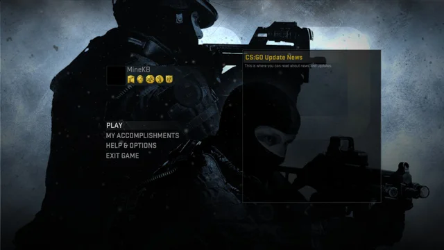
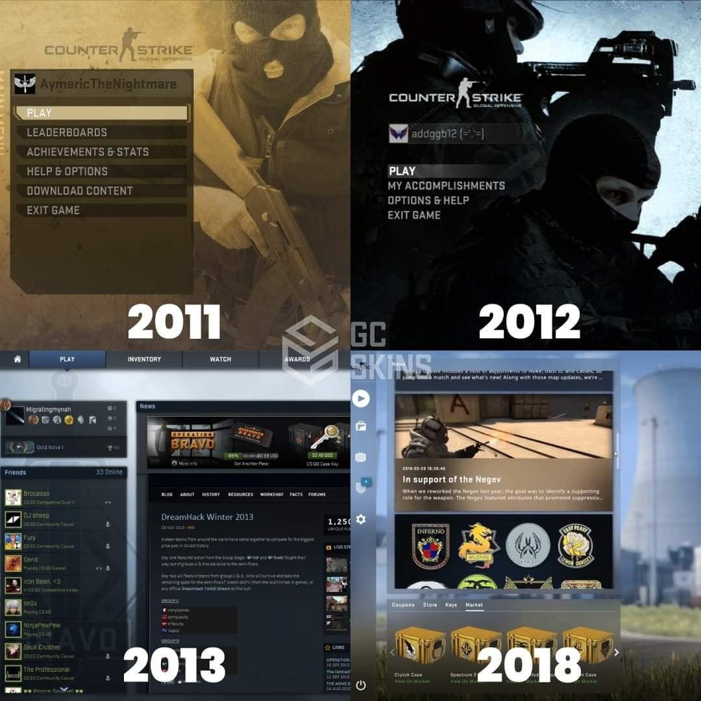
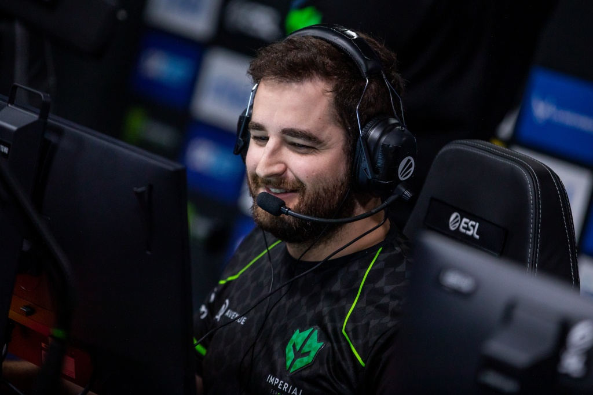
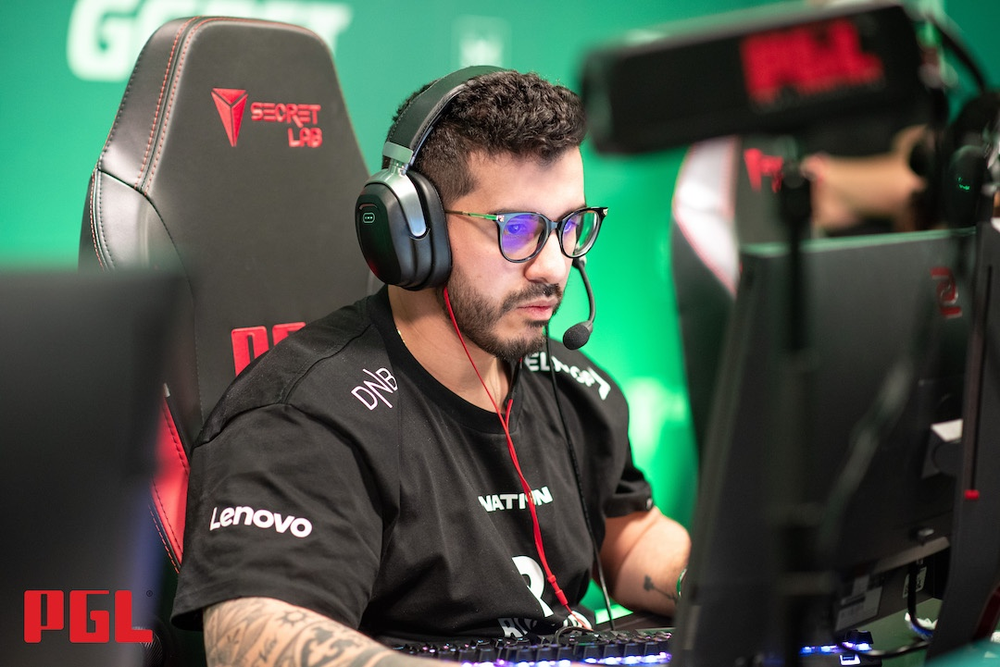
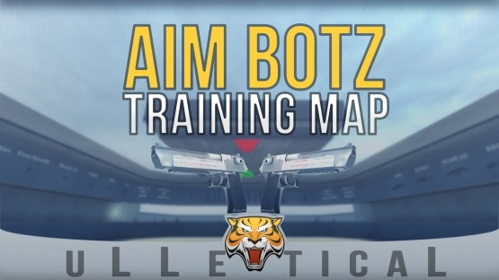
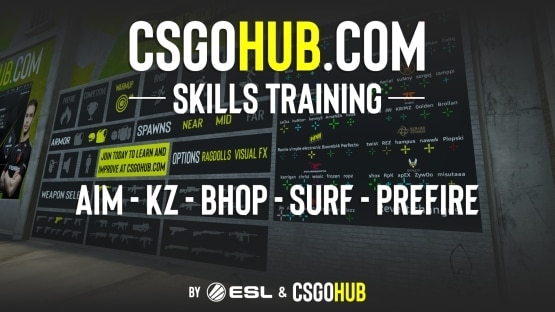
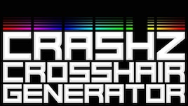

Métodos para evoluir significamente no CSGO
História do CS
Primeiramente, devemos entender o que é o CSGO:
- Bom, CSGO é um jogo de FPS, onde existem dois "lados", os Contra-Terroristas, cujo objetivo é defender os bombsites (lugares onde a bomba será plantada) e/ou eliminar o time adversário, e os Terroristas, cujo objetivo é plantar a bomba e impedir q os CT's a desarmem e/ou eliminar toda a equipe adversária.
- Agora iremos voltar à 1996, no jogo Half-Life. O CS começou nesse jogo como um MOD que se tornou muito popular, até q, em 2000, foi lançado o CS 1.0, uma versão não tão famosa, com gráfico consideráveis devido à época. Em 2003 foi lançado uma das versões mais memoráveis do jogo, o CS 1.6, nesse jogo se formaram diversas equipes e o cenário profissional do jogo foi crescendo cada vez mais. No Brasil, houve um período em que o jogo foi proibido devido ao lançamento de um mapa que se passava nas favelas do Rio de Janeiro e, por conta disso, o governo da época proibiu o jogo no País. Porém algum tempo depois o jogo ja voltou às plataformas e os brasileiros voltaram em peso às lan hoses.
- Entre o CS 1.6 e o lançamento do atual CS:GO em 2012, houveram algusn outros CS's aos quais não irei me aprofundar neste site, mas caso tenha interesse em saber mais sobre a história do CS, CLIQUE AQUI . Como dito anteriormente, o CS que conhecemos hoje foi lançado em 2012, entretanto, nada parecido como ele é atualmente. Quando lançado, ele não tinha Modo online nem metade das funcionalidades que tem atualmente.
- A imagem a cima é da "Lobby" do CS:GO pouco depois de seu lançamento. Nele a sua jogabilidade era bem limitada, podendo apenas jogar em uma rede local ou com bots. Porém com o passar do tempo as pessoas ja conseguiam ver a forma q o CS ja estava tomando, com modo competitivo entre outros. Até que em 2018 foi lançada a versão que conhecemos hoje, uma versão com diversas funcionalidades e uma ampla gama de escolhas.
Como avançar no CS
1) Assistir a jogos profissionais e dicas
-
Fallen

Coldzera

ESL Twitch
2) Treinar em mapas de granadas e mapas da comunidade
Aim Botz

CSGO HUB

3) Escolher a mira ideal
CASHZ
